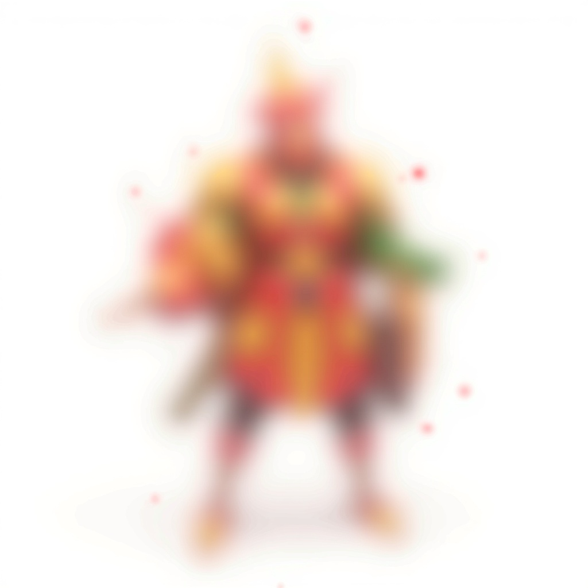
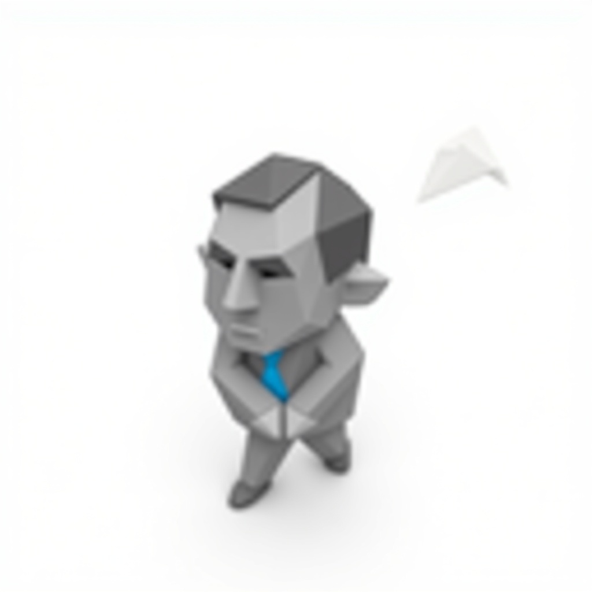

Reign of Brabant
Een WarCraft-geinspireerde RTS met Brabantse ziel — van concept tot code
Brabanders
Randstad
Limburgers
Belgen
PRD v1.0
Scroll om te ontdekken
Een WarCraft-geinspireerde RTS met Brabantse ziel — van concept tot code
Het jaar 1473. Het Gouden Worstenbroodje is gestolen. Brabant staat op. Vier facties botsen in een strijd om cultuur, identiteit en het recht op een frikandel speciaal.
Brabandse units worden sterker naarmate ze dichter bij elkaar staan. +50% stats bij 20+ units. Nergens anders.
Gebaseerd op echte cultuurverschillen. Brabanders feesten, Randstad vergadert, Limburg graaft tunnels, Belgen diplomatiseren.
Resources heten "Worstenbroodjes" en "LinkedIn Connections". De Randstad ultimate heet "Eindeloze Vergadering".
Three.js + WebGPU. Geen install, direct speelbaar. Desktop-first, mobile secondary. 60fps target.
82% van 3D assets via Blender procedureel. Voices via ElevenLabs. Muziek via Suno. Totale kosten: ~$50.
Gemaakt door iemand met een WarCraft: Reign of Chaos tattoo. Dit is geen clone — het is een liefdeverklaring.
Vier facties, elk met een unieke mechanic, playstyle en persoonlijkheid. Gebaseerd op echte regionale cultuurverschillen — met een dikke laag humor.
"Samen staan we sterk — en we staan altijd samen"

"Ja?" / "Zeg het maar" / "Moet dat?! Vooruit dan maar"

"ALAAF!" / "Nog eentje dan!" / "Pansen erop!"

"De Prins is hier!" / Ultimate: "ALAAF!" — alle units 8s invincible
"Dit staat niet in de planning"
"Kan ik dit op mijn LinkedIn zetten?" / "Dit stond niet in mijn takenpakket"

"Even mijn agenda checken" / "Dit eskaleert!"

"Vijandige Overname" — capture vijandelijk gebouw permanent
"Limburg beugt neet" — v1.0
"Compromis is ons middelste naam" — v2.0

Underground tunnel-netwerk. "Mijnschacht Instorten" — AoE stun.

Diplomatieke Verwarring — 25% kans vijanden vallen eigen team aan.
Elke factie heeft een mechanic die nergens anders bestaat. Gebaseerd op echte culturele stereotypen, vertaald naar strategische diepte.
Brabandse units worden sterker naarmate ze dichter bij elkaar zijn. Dit stimuleert deathball-strategieen maar maakt ze kwetsbaar voor AoE.
Elke actie duurt 20% langer. Maar elke voltooide actie geeft +3% snelheid (stapelbaar). Na 20 acties is de Randstad SNELLER dan iedereen. Plus: elke 5 minuten pauzeren alle gebouwen 8 seconden voor "werkoverleg".
| Timing | Snelheid vs baseline | Werkoverleg |
|---|---|---|
| Start game | -20% (traag) | Elke 5 min: 8s pauze |
| Na 10 acties | +10% (normaal) | Elke 5 min: 8s pauze |
| Na 20 acties | +40% (snel!) | Uitschakelbaar via Tier 3 tech |
Een hybride AI-pipeline die 82% van alle 3D assets gratis genereert via Blender, aangevuld met Meshy/Tripo3D voor complexe modellen.
Van een typo ("Zu") tot een volledige PRD met concept art — dit is hoe Game Master en zijn team van AI agents te werk gaan.
Dankzij de Blender-first strategie en bestaande abonnementen kost deze game bijna niks aan tooling.
| Tool | Items | Kosten | Notes |
|---|---|---|---|
| Blender procedureel | 127 modellen | $0 | <60s generatietijd, alleen CPU |
| Meshy v6 / Tripo3D | 28 modellen | ~$48 | 1 maand Max plan |
| fal.ai (Flux) | 30 images | ~$2 | Pay-per-use |
| Nano Banana | 90 images | $0 | Free tier (50/dag) |
| ElevenLabs | 216 voices + 41 SFX | $0 | Bestaand abonnement |
| Suno | 10 tracks | $0 | Bestaand abonnement |
De gouden regel: humor in de flavor, strategie in de mechanics. Unit responses doen het zware humorwerk. Abilities hebben grappige namen maar serieuze effecten.
| Resource | Brabanders | Randstad | Limburgers | Belgen |
|---|---|---|---|---|
| Goud | Worstenbroodjes | PowerPoints | Vlaai | Frieten |
| Hout | Bier | LinkedIn Connections | Mergel | Trappist |
| Speciaal | Gezelligheid | Havermoutmelk | Kolen | Chocolade |
Boer (select): "Ja?" / "Zeg het maar"
Carnavalvierder (attack): "ALAAF!" / "Pansen erop!"
Kansen (move): "Sssst, ik ga al"
Boerinne (select): "Hedde al gegeten?"
Tractorrijder: "BANSEN UIT DE WEG!"
Stagiair: "Kan ik dit op mijn LinkedIn zetten?"
Manager (attack): "Dit eskaleert!"
Consultant: "Vanuit mijn optiek..."
Hipster: "Dit was populairder voordat jullie het ontdekten"
CEO (ultimate): "Vijandige Overname!"
WANSEN: +10.000 resources
GUUANSEN MANSEN: Alle muziek = Guus Meeuwis
VERGANSEN DERING: Vijanden stoppen permanent
VLAAI STORM: Random vlaaien uit de lucht
SPROOKANSEN BOS: Unlock Efteling-factie
216 voice lines met echt dialect. Geen AI-Engels met een Nederlands sausje — dit wordt samen geschreven en door Richard zelf ingesproken.
De voice lines worden in een dedicated sessie samen uitgewerkt:
Play-knoppen worden actief zodra de echte samples klaar zijn.
De ultieme aanpak: Richard spreekt de basis voice lines ZELF in met echt Brabants dialect. Die opnames worden via ElevenLabs voice cloning omgezet in 4 unieke factiestemmen met consistent karakter.
Waarom zelf inspreken? Omdat geen AI de warmte van echt Brabants dialect kan vangen. "Hedde al gegeten?" klinkt alleen goed als het ECHT is.
Klik op de play-knoppen hierboven voor een Web Speech API preview. Echte samples met Richards stem volgen in Phase 6.
7 phases van gekleurde dozen tot een volledige RTS met 4 facties, campaign en multiplayer.
| Phase | Wat | Status |
|---|---|---|
| 0. PRD | 22.000 regels game design, 6 sub-PRDs, 6 PoC docs | ✓ Klaar |
| 1. Core Engine | Three.js renderer, bitECS, terrein, camera, pathfinding | ✓ Klaar |
| 2. Economy | Resources, bouwen, unit productie, gather loop | ✓ Klaar |
| 3. Combat | Damage, projectiles, auto-aggro, death system | ✓ Klaar |
| 4. AI | Scripted build order, gather, army, attack waves | ✓ Klaar |
| 5. Factions | Gezelligheid + Carnavalsrage, Bureaucratie + Werkoverleg | ✓ Klaar |
| 6. Assets | 12 Meshy modellen, 15 ElevenLabs SFX, 16 concept art | ✓ Klaar |
| 7. Heroes | 4 heroes, 12 abilities, hero revival, AI hero training | ✓ Klaar |
| 8. Campaign | 3 missies, campaign select, star rating, wave spawner | ✓ Klaar |
| 9. UI/Flow | Main menu, faction select, tutorial, loading, game over | ✓ Klaar |
| 10. Visuals | Fog of war, damage flash, idle bob, shadows, minimap | ✓ Klaar |
| 11. Muziek | Suno tracks (Richard maakt), factie themes | Volgende |
| 12. Voices | Richard spreekt in, ElevenLabs cloning, 216 lines | Planned |
| 13. Campaign 4-12 | Volledige Brabanders campaign (12 missies) | Planned |
| 14. Limburgers | 3e factie, tunnels, Vloedgolf van Vlaai | Planned |
| 15. Multiplayer | Colyseus, invite links, ELO, leaderboard | Planned |
| 16. Klapper | Epic Replay, Brabants weer, AI commentator | Planned |

256x256 game units. Vlak met heuvels, bossen, vennen. 6 gold mines, 8-10 bomen-clusters, chokepoints via water.

Carnavalvierders vs Corporate Managers. Confetti vs spreadsheets. Worstenbroodjes vs PowerPoints.
6 gespecialiseerde agents werkten parallel aan 13.915 regels gedetailleerde specificaties. Elk document is direct implementeerbaar.
Colyseus op Mac mini M4, invite via link (geen account), ELO rating, reconnection, anti-cheat, Carnavalsmode party game.
38 missies, 4 campaigns + geheime Efteling campaign, survival/tower defense/boss rush, 28 easter eggs, 30+ achievements.
16 schermen, 39 settings, 14 error scenarios, 3 colorblind modes, 19-staps tutorial, 50 loading tips, 20 achievements.
516 voice line scripts, 80 SFX, 15 muziek tracks, 3D spatial audio, voice recording guide voor Richard.
bitECS met 29 systems, rendering pipeline, recast pathfinding, AI FSM, save/load, performance budgets, security.
Epic Replay met AI-commentator, echt Brabants weer in-game, seizoensevents, geheime Efteling-factie, GIF generator.